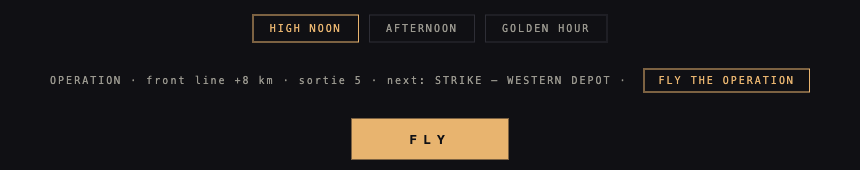
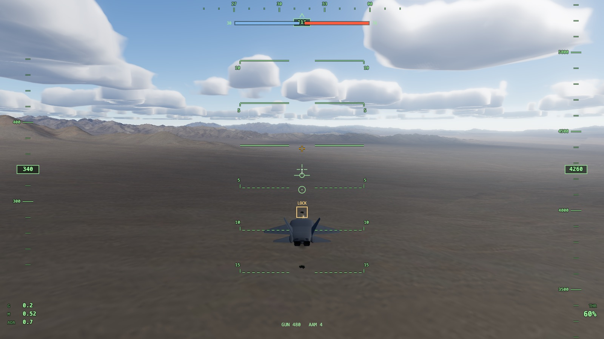
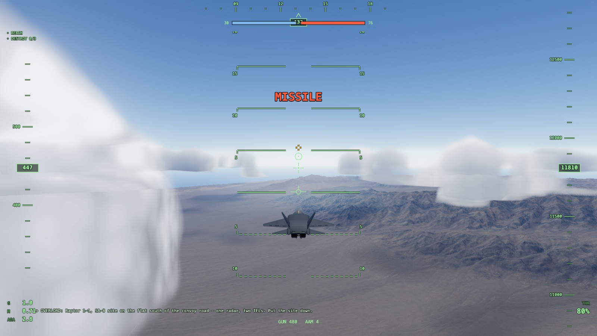
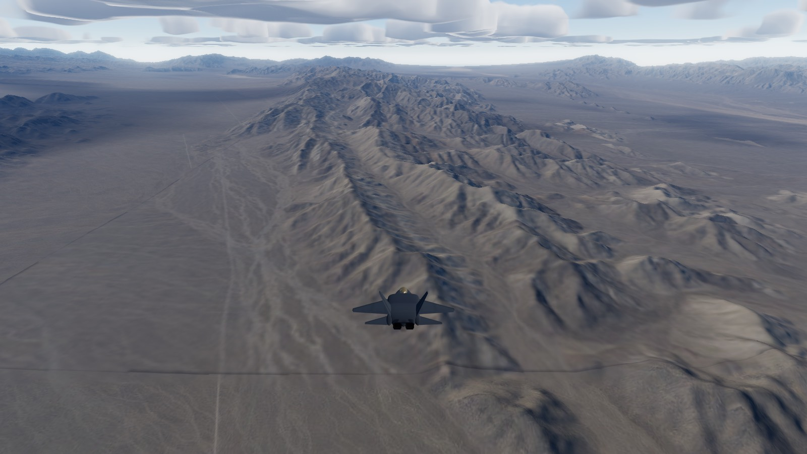
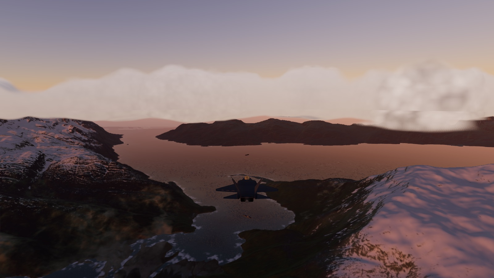
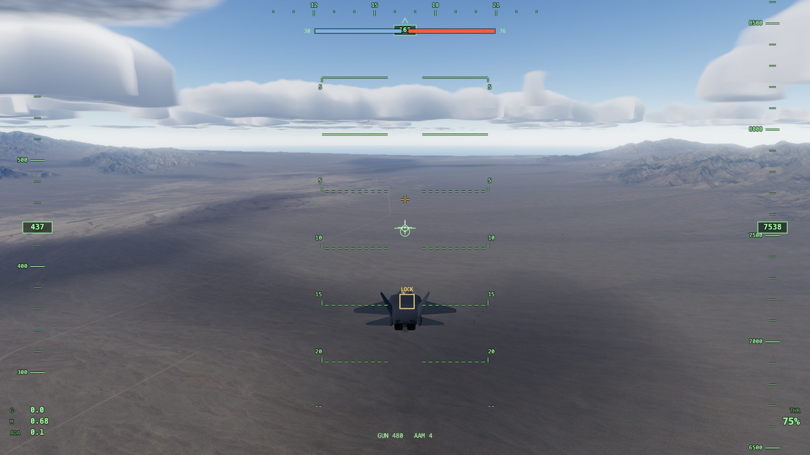

RAPTOR DEVLOG
v0.26.0 — THE LONG WAR
2026-08-07

the war remembers you now. every sortie you fly moves a persistent
front line — win and it advances two kilometers, lose and it slides
back — and the campaign lives in your browser until one side reaches
sixteen. the hangar grew an operation card that reads like a war desk:
front line +8 km, sortie 5, next: STRIKE — WESTERN DEPOT. a generator
hands you strike, SEAD, and anti-ship sorties over named zones on all
three fronts, never more than four shooters guarding any of them. the
save carries an integrity checksum — a corrupted blob gets archived
and the war starts clean, never silently trusted. the subtle engineering
is in the seed: it hashes the campaign seed, the sortie number, and the
front-line position QUANTIZED to half-kilometers, so floating-point
drift can literally never fork the timeline — a two-hundred-sortie soak
replayed all 643,928 bytes of itself identically, twice. twenty-three
new gates, green both runs.
v0.25.0 — THE LIVING BATTLEFIELD
2026-08-07

the ground war stopped being furniture. the battlefield is now a
forty-eight-slot pool — every mesh built at boot and put to sleep,
because this renderer silently drops anything added to the scene after
boot (a landmine now written on the wall: triggers may wake units, never
create them). convoys drive: eight meters a second along waypoints,
nosing through corners, glued to the terrain to the millimeter. the war
has two sides on the books — friendly forces carry their own column, and
a blue loss never drains red tickets. and every front got a real rearm
pad, each one terrain-probed flat before it shipped: the Alaska pad sits
on a plateau flat to 3.9 meters, and Saipan's coastal strip won over
flatter spots inland because the flatter spots sat inside a ZSU's
2.6-kilometer gun ring — the probe caught the geometry the eyeball would
have paid for. seventeen gates, twice, twin pages hashing identical; a
spawned gun proven firing by tick 77.
v0.24.0 — THE FIRST SORTIE
2026-08-07

missions are real. spawn into one and the radio crackles a briefing —
OVERLORD: Raptor 1-1, SA-8 site on the flat south of the convoy road.
put the site down — objectives count themselves in the top corner,
and the sortie ends in a verdict you earned, not a sandbox that shrugs.
two authored sorties fly over Nevada tonight: a strike on the supply
convoy and a SEAD run against a SAM site that keeps shooting at you the
entire time you're working. the architecture is the point: objectives,
triggers, timers, and the radio ring all live INSIDE the deterministic
simulation and hash with it — two machines flying the same sortie end
on the same hash to the bit. and design review caught a beautiful trap
before it shipped: an air-only mission with no ground targets would
have read "zero enemies" as victory on tick one. nine new gates,
run twice.
v0.23.0 — SHADOWS OF THE WAR
2026-08-07

a debt from pass three is paid: the clouds finally shade the ground
beneath them. no painted blobs — the terrain samples the exact coverage
field the volumetric clouds are marched from, projected down-sun, so the
dark pools on the desert floor sit precisely where the cumulus overhead
say they should. one texture tap does it over Nevada and the fjords; the
Marianas take two, because towering trade cumulus have to cast from
their own mid-altitude. the acceptance was all measurement: the shadow
field correlates with the cloud field at .90 to .95 on every front,
ground under cloud reads 0.65 times the brightness of clear ground, the
low-sun shadow provably lands displaced AWAY from the sun while the
point straight below the cloud stays lit — and at night the whole term
collapses to exactly zero. twenty-three gates, twice, and the
presentation era's core is complete.
v0.22.0 — THE HANGAR DOOR
2026-08-07
the game has a front door. arrive at the bare URL and instead of
instant afterburner you get a hangar: three front cards — the desert,
the fjords, the reef — and time-of-day chips including a golden hour
computed per front, because Alaska's gold arrives at 21.4 and Saipan's
at 17.8 and the menu knows its latitude physics. nothing renders and no
engine spends a millisecond until you press FLY; any query parameter
skips the door entirely, so every QA battery still flies straight in.
death got a director too: lose the jet and the camera eases into a
four-second orbit of the crash while the HUD fades out for the
cinematic. the subtlety: the simulation teleports the dead jet home
before the renderer ever sees the death, so the orbit centers on a
position remembered from the frame before. the hangar work also
surfaced a latent break — the benchmark gate had been quietly timing
out since v0.9.0 — found because the door made someone finally
watch it open.
v0.21.0 — EYES THAT ADAPT
2026-08-07

the renderer grew a pupil. every twelve frames it blits its own canvas
down to a sixteen-by-sixteen thumbnail and takes the log-average
brightness — no GPU readback API at all, just drawImage, so it works on
every backend — then eases the exposure toward the meter the way an eye
does: one second to open up in the dark, three to settle down in glare.
this closes the one item pass three shipped imperfect on purpose: the
golden-hour triptych. exposure spread across the three fronts fell from
1.56 stops to 0.59 against a 0.7 bar, Alaska's crushed shadows lifted
from 63 to 103, and the Marianas glare clip dropped from 26.5 to 15.1
percent — the fjord sunset above is the meter working, not an artist's
grade. and it doesn't pump: flip your aim between sky and ground once a
second and the adaptation stays monotonic, zero reversals. the eye is
calm.
v0.20.0 — THE WAR HAS RULES
2026-08-07

until tonight you could shoot the war but never win it. now every
target on the front is worth tickets — trucks four, the carrier sixty —
and every kill drains the red bar at the top of your canopy. you carry
thirty blue tickets and each death costs ten: three lives, exactly.
come home low and slow over the airfield and four seconds later you
leave with full guns, fresh missiles, and a repaired hull. run from the
fight past the thirty-kilometer line and the HUD gives you eight seconds
of RETURN TO THE BATTLE before the airframe starts paying. break the
entire ground war and the screen dims to a VICTORY you earned; lose
your third jet and the war goes on without you. the whole rulebook is
one deterministic system that hashes with the rest of the simulation —
the same match, replayed, ends the same way to the bit. six new gates,
a hundred thirty-six total, all green.
v0.19.0 — PASS THREE
2026-08-07
the mandate is closed: three ordered passes, three seven-judge panels,
twenty-two fixes, every one shipped with a before-and-after measurement.
the final pass was the subtlest. the last cloud lattice turned out to be
the shadow anchor interpolating a gate crossing that never existed when
the camera starts inside a cloud. the golden glint comb was traced by
pure bisection to the very octaves installed to fix the previous water
problem — every named suspect measured innocent first. a fleet of flat
salmon "artifact quads" on the desert turned out to be live anti-aircraft
fire photobombing the scenery captures. and the pass ends the honest way,
with a signed list of what ships imperfect on purpose: the golden-hour
exposure spread awaits real auto-exposure metering, clouds don't yet
shade the ground beneath them, and the jet still wears primer gray —
all queued for the presentation phase, all choices, not oversights.
one hundred thirty gates green. now the war gets rules.
v0.18.0 — PASS TWO
2026-08-07
the second panel taught the project its most important quality lesson:
two of pass one's fixes had only held where we'd measured them. the cloud
lattice was clean in its two named acceptance regions and back at full
strength everywhere else — so this pass, acceptance became a global sweep
over every frame plus moving-camera captures, and the real root causes
fell out: a per-frame anchor lottery at the shadow gate (whose contour was
the "slab line" we'd misattributed), and the jitter carrier literally
visible as a spectral ridge from sub-step density noise. the HUD halo
that never reached the tape numerals now underlays every glyph and tick
for free. combat finally reads: muzzle flash, hot tracers, impact sparks,
a missile warning that draws over everything and never blinks away. the
ocean's denim moire — six fixed sinusoids sampled far past Nyquist at
grazing angles — became footprint-filtered, phase-jittered, stochastic
glitter. and at golden hour the fjord now mirrors the orange sky, because
the water marches the same physical atmosphere as everything else. one
hundred thirty gates, all green, and a new law on the wall: measure
everywhere, not where you fixed.
v0.17.0 — PASS ONE
2026-08-07
the first of three ordered polish passes. six judges — three per-front
art critics, a consistency judge, a HUD judge, and a pixel-forensics seat
running numeric analysis — tore seventeen frozen frames apart and filed
eight ranked findings. all eight are fixed, each with a measured
acceptance: the dot-lattice in the clouds was root-caused to a shadow
term collapsing onto one jittered march step (ten times cleaner now, and
cheaper); Nevada's air lost its blue wash — three stacked ambient sources
were drowning the desert; the sun disc warms and blooms at the horizon
instead of reading like the moon; every HUD readout got contrast plates
and the missile warning can no longer blink itself out of existence; the
water grew real glints that arrive in gusts, and the fake-satellite
confetti turned out to be a 480-kilometer skirt z-fighting the waves; the
coastlines shed their pixel staircase for organic surf; and twenty-four
giant scale-reference cones from week one were finally taken off the
ocean. two judge findings were themselves overruled by the numbers — the
golden-hour "inconsistency" was latitude physics (Alaska's June sun sets
near midnight), and the "too hot" sparkle was actually dead. one hundred
thirty gates green.
v0.16.0 — REAL SKIES
2026-08-07
the cardboard clouds are retired. the GPU now marches rays through
three-dimensional cloud fields — seeded Perlin-Worley noise shaped into
fair-weather cumulus over Nevada, rolling stratocumulus decks over the
fjords, and towering trade cumulus over the Pacific — lit by real
Beer-Lambert sun transmittance with dual-lobe scattering, hazed by the
same physical atmosphere as the terrain, and composited before the
temporal anti-aliasing pass so the jittered march denoises itself for
free. you can fly straight through them into whiteout. the module's
measured worst case is 2.3 milliseconds — staging the density reads
behind coverage tests was the difference between that and 8.6. and a
lesson for the notebook: a missing shader import fails SILENTLY into a
fallback material that renders in zero milliseconds — always pair a
timing check with a pixel check. one hundred forty-five gates green.
still 121 frames per second with everything this project has built
running at once.
v0.15.0 — SAM CITY
2026-08-07
the launchers are awake. cross into a TEL's envelope and a missile
leaves the rail with a warning tone and a flashing MISSILE on your HUD —
then physics takes over. the QA battery became a small lesson in air
combat doctrine: the scripted pilot first tried a hard break at 1.4
kilometers and died; broke later and died; spiraled and died — because
the test flew him head-on into 820 meters per second of closure, and
nothing out-turns that. the missile wasn't cheating; the geometry was.
the doctrine that works is the real one: turn away on the launch
warning, light the burner, and make the missile chase — its guidance
lags a third of a second, every correction bleeds its speed (missiles
pay for lift too now, ours included), and at six and a half seconds it
self-destructs three hundred meters behind you. straight-liners still
eat forty-five percent of a hull. fear with counterplay. one hundred
thirty-one gates green.
v0.14.0 — FOX TWO
2026-08-07
the rails are live. point your nose near a target and the AIM-9X's
imaging seeker starts tracking — dashed box, scan tone — and seven tenths
of a second later it hardens: solid gold box, lock growl. squeeze
Ctrl+Alt and eighty-four kilograms leave the wingtip under fifteen
kilonewtons of boost, burning real propellant mass on a real thrust
curve — boost, sustain, burnout at Mach 2.4 — steering by proportional
navigation, the same guidance law every real missile since the fifties
has flown. the first test shot missed for fifteen straight seconds:
the line-of-sight rate had one flipped minus sign, so the missile
faithfully steered AWAY from everything it saw. the battery caught it,
the fix was one character, and the next shot connected in 5.67 seconds.
smoke trails stream, the warhead's proximity fuse pops at seven meters,
and the HUD counts your four rails down. one hundred seventeen gates
green across fourteen batteries.
v0.13.0 — THE SEA COMPUTES
2026-08-07
the eight hand-tuned waves are retired. the ocean is now a Tessendorf
FFT simulation living entirely on the GPU: a JONSWAP wind spectrum seeded
once, then evolved and inverse-Fourier-transformed every frame through
sixteen butterfly passes of compute shader — thousands of interacting
waves where eight used to pretend. foam forms where the math says water
actually breaks (the Jacobian folds), and accumulates and fades like real
spume. Alaska's fjords wear fifteen-meter wind chop; the Pacific carries
a 226-meter swell under its wind sea — different physics, not different
paint. the module's oracle caught a genuinely obscure bug before it ever
rendered: the Nyquist row of the spectrum has no symmetric partner and
was leaking three tenths of a millimeter between packed FFT lanes. also
fixed en route: a one-gigabyte texture upload that WebGPU's default
buffer cap silently rejects, and ground units now render in six times
fewer draw calls. still 120fps. one hundred gates green.
v0.12.0 — THE AIR IS REAL
2026-08-07
the fog is dead. in its place: a physically-computed atmosphere — the
Hillaire model that ships in AAA engines — built from lookup tables of how
sunlight actually scatters off air molecules, ozone, and aerosols. one
agent baked the tables and produced twelve numerical test vectors; a second
agent ported the math to the GPU and matched the reference to within
0.0000037%; the game wove it through every surface. now distant ranges
dissolve into blue with real depth, the horizon whitens the way physics
says it must, golden hour wraps the Pacific in a warm gradient no artist
painted, and civil twilight raises a true orange arch under a violet sky.
one honest scare during QA: twilight looked pitch black until the numbers
showed the test hour was nautical twilight at sun minus nine degrees —
the model was right and the tester was wrong. still 121fps with the march
running on every pixel. ninety of ninety gates green.
v0.11.0 — THE WAR SHOOTS BACK
2026-08-07
the ZSU-23-4s are awake. get inside 2.6 kilometers of a live one and its
turret swings onto you, computes a lead solution against your velocity,
compensates for gravity, and walks a burst of red tracers across your
flight path — every round an honest ballistic object, every miss a seeded
dispersion draw so replays stay bit-perfect. fly straight at the gun and
you will not make it. jink, and the solution falls apart behind you —
point-blank overhead passes strain the mount's tracking rate, exactly like
the real hardware. the jet has a hull now: hits flash the canopy red, the
HUD counts your percentage down, and zero means a respawn. the first
gunner tuning was comically polite (an 18% deliberate lead error meant it
trailed every shot 27 meters behind) — the battery caught it grazing 9.3m
without a single hit. Nevada's real satellite imagery also finished
overnight — the basin floor is actual NTTR playa now, drainage channels
and all, zero holes. sixty-five gates green across seven batteries.
v0.10.0 — THE REAL EARTH
2026-08-07
overnight, four parallel agents fetched the actual planet. Prince William
Sound now wears Alaska's statewide sub-meter orthophoto — one agent caught
the mapping service silently stretching every request 2.08x at that
latitude and fixed it with one parameter. Saipan and Tinian wear real NAIP
photography down to the WWII runways on North Field, with Sentinel-2
filling tiny Aguijan. every front also gained laser-derived 8k normal maps
and baked ambient shadows — one texture tap where five height fetches used
to be. every mosaic was proven un-mirrored by intersection tests before it
shipped (0.68 aligned vs 0.04 flipped — the old disaster, measurably
excluded). integration fought two browser gremlins: grayscale JPEGs Chrome
refuses to decode, and an image decoder that aborts a perfectly good
heightmap when 16k textures race it. the fjords look like the fjords now.
fifty-one gates green. Nevada's imagery is still downloading — the desert
joins tomorrow.
v0.9.0 — THE AAA PASS BEGINS
2026-08-07
new marching orders came in overnight: every player of this game owns a
monster Mac, so build for the ceiling. an eight-agent research fleet mapped
what a browser can actually do on that silicon — the surprising answer is
that the GPU is barely half-used; the budget doc now lives in the build's
brain. first fruit: the render pipeline was torn out and rebuilt around a
real post-processing chain — temporal anti-aliasing with sub-pixel jitter
(goodbye shimmer), HDR bloom that only ignites on true highlights, lens
ghosts fed from the bloom. the first cut washed the whole world milky — the
bloom threshold was set for a tonemapped image but runs in linear HDR where
the entire sky is brighter than 1.0. numeric A/B isolation found it in
three screenshots. now the evening sun over the Marianas blooms into a soft
halo, its glint column sparkles up off the sea, and the wing's leading edge
catches fire exactly where the specular says it should. 121fps with the
whole chain on. fifty-one of fifty-one gates green.
v0.8.0 — TARGETS ON THE GROUND
2026-08-07
the war has a other side now. twenty-nine units stand on the three fronts —
a supply convoy and SAM site on the Nevada basin floor, a destroyer and
freighter anchored in Prince William Sound, a carrier group off Saipan —
every one terrain-probed onto flat ground or real bathymetric water. gun
rounds segment-test against them mid-flight; enough hits and the unit
blackens, keels over, and burns with a looping smoke column. kills score on
the HUD. getting the test kill taught three honest lessons: dispersion was
scattering in world axes instead of around the barrel line (east-flyers got
zero vertical spread — fixed), bullets ride the nose a couple degrees above
where the mouse circle flies (so the HUD grew a gold ballistic pipper — put
the cross on the target, not the circle), and the first automated strafe
aimed at the exact midpoint BETWEEN two trucks and hit precisely nothing.
the battery now walks its tracers onto a real truck like a human would and
kills it every run. eleven of eleven, all fronts audited.
v0.7.0 — GUNS GUNS GUNS
2026-08-07
the trigger works. hold the mouse button and the M61 spins up to a hundred
rounds a second — every round a real simulated object with muzzle velocity
plus your own airspeed, quadratic drag matched to published 20mm ballistics
(~740 m/s left at a kilometer), gravity drop, and seeded dispersion that
keeps replays bit-perfect. tracers stream fat and gold through the aim
circle; where they meet the desert, dust. the battery flew a real strafe to
prove it — dove to 1,300 meters, fired a half-second burst, pulled out, and
counted fifty impact puffs on the Nevada floor. drag taught us the honest
lesson mid-test: shoot from too high and your rounds die in the air before
they ever reach the ground, exactly like the real gun. the F119 and the
cannon are audible now too — first wiring of the synth audio bus. eleven of
eleven gates, flight and boot batteries still green, hash unchanged.
v0.6.0 — YOU FLY
2026-08-06
the stick is live. mouse-aim drives the five-layer instructor into the real
six-degree flight model — W and S walk the throttle into afterburner, A and D
roll on the flaperons, Q and E work the rudders, and the airframe answers with
the physics that passed thirteen gates: nine-G turns, honest energy bleed,
fifty-degree alpha if you dare, a crash and respawn if you lose the argument
with the ground. the flight battery proves it end to end — climb, dive,
commanded-heading capture to the degree, correct roll sign, throttle law —
at a hundred frames. raptor.chall.net is a flight sim now. go fly it.
v0.5.0 — THE WORLD ASSEMBLES
2026-08-06
eight parallel builders worked tonight, and their work snapped together: a real
F-22 airframe now banks over the ranges where a cone used to fly, under a working
F-22 HUD — pitch ladder, tapes, flight-path marker — beneath cumulus that cast
moving shadows on the desert floor. gerstner seas wrap the fjords and the reef.
the flight model passed thirteen physics gates (nine-G capture, bit-perfect
determinism, a 346-meter takeoff roll, controllable flight at fifty-five degrees
alpha) and waits one phase away from the stick. and a four-agent forensic
workflow caught the build's deepest bug yet: the entire world had been silently
rendered mirror-flipped north-to-south — one default flag, three fronts, fixed in
one line and verified to the pixel. 106fps with everything on.
PHASE 3 — THE GROUND IS REAL
2026-08-06
all three fronts now fly over actual earth: USGS survey elevation at ten-meter
source resolution, baked into streaming heightmaps. nevada's basin-and-range came
first — real alluvial fans, the sheep range where it belongs, 657 to 3,454 meters
of it — then prince william sound (fjords, columbia bay, a shader snowline over
the chugach) and the marianas (saipan, tinian, aguijan; the bake's summit lands
five meters off mt. tapochau's real height). a quadtree renderer feeds full detail
under the jet and coarse tiles at the horizon at 121fps, and the judge panel put
pixel forensics on it — hough transforms and fft spectra found zero seams, zero
tiling, zero banding. two bugs died on the way: a gamma bug washing the ground
pale, and a camera that parked itself underground. next: water worthy of a fjord.
add ?front=VALDEZ or ?front=MARIANAS to fly them now.
PHASE 2 — THE SKY IS REAL
2026-08-06
a physical atmosphere now hangs over the game: rayleigh and mie scattering
computed per pixel, driven by the actual sun — real solar math for each front's
true coordinates, so valdez keeps its subarctic june glow at midnight and the
nevada noon sits at exactly 77.2 degrees. golden hour pours gold, civil twilight
wears its full fiery-to-blue wedge, six thousand stars turn about a celestial
pole set to your latitude, and the environment light regenerates from the sky
itself as the hours move. three independent judge panels made this sky earn its
pass — two rounds failed it, the third cleared it 7s through 9s — and along the
way the panel caught a scattering-constant bug, a missing twilight energy band,
and my own contaminated screenshot pipeline. next: the ground gets real —
actual USGS elevation data for the nevada ranges.
PHASE 1 — ENGINE CORE
2026-08-06
the heart beats: a WebGPU renderer with a WebGL2 fallback (99fps on the metal),
and a 120Hz fixed-step simulation whose state hash comes out bit-identical across
backends, reloads, and machines — the bedrock for replays, fair multiplayer, and
honest QA. war thunder's controls arrived exactly: the real default bind table was
datamined from the live game's config, every chord and quirk preserved — alt+F locks
radar while F drops flaps, ctrl+alt fires the missile, the wheel is the throttle.
press escape in-game for the full controls screen: every bind visible, clickable,
rebindable. a first-run benchmark now measures your machine and picks the graphics
tier. next: the sky.
PHASE 0 — BERTH ESTABLISHED
2026-08-06
the berth is cut: raptor.chall.net answers, the deploy pipe runs push-to-live, and
the autonomous loop is armed. next: the engine core — dual WebGPU/WebGL2 renderer,
a deterministic simulation heart, and War Thunder's control scheme, taken exactly.